- Буквенные выражения
- Общие сведения об уравнениях
- Решение задач с помощью уравнений
- Квадратный корень
- Что такое квадратное уравнение и как его решать?
- Формулы корней квадратного уравнения
- Примеры решения квадратных уравнений
- Примеры решения задач
- Задания для самостоятельного решения
Что такое квадратное уравнение и как его решать?
Мы помним, что уравнение это равенство, содержащее в себе переменную, значение которой нужно найти.
Если переменная, входящая в уравнение, возведенá во вторую степень (в квадрат), то такое уравнение называют уравнением второй степени или квадратным уравнением.
Например, следующие уравнения являются квадратными:
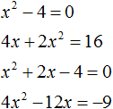
Решим первое из этих уравнений, а именно x2 − 4 = 0.
Все тождественные преобразования, которые мы применяли при решении обычных линейных уравнений, можно применять и при решении квадратных.
Итак, в уравнении x2 − 4 = 0 перенесем член −4 из левой части в правую часть, изменив знак:
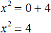
Получили уравнение x2 = 4. Ранее мы говорили, что уравнение считается решённым, если в одной части переменная записана в первой степени и её коэффициент равен единице, а другая часть равна какому-нибудь числу. То есть чтобы решить уравнение, его следует привести к виду x = a, где a — корень уравнения.
У нас переменная x всё ещё во второй степени, поэтому решение необходимо продолжить.
Чтобы решить уравнение x2 = 4, нужно ответить на вопрос при каком значении x левая часть станет равна 4. Очевидно, что при значениях 2 и −2. Чтобы вывести эти значения воспользуемся определением квадратного корня.
Число b называется квадратным корнем из числа a, если b2 = a и обозначается как
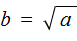
У нас сейчас похожая ситуация. Ведь, что такое x2 = 4? Переменная x в данном случае это квадратный корень из числа 4, поскольку вторая степень x прирáвнена к 4.
Тогда можно записать, что
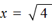
. Вычисление правой части позвóлит узнать чему равно x. Квадратный корень имеет два значения: положительное и отрицательное. Тогда получаем x = 2 и x = −2.Обычно записывают так: перед квадратным корнем ставят знак «плюс-минус», затем находят арифметическое значение квадратного корня. В нашем случае на этапе когда записано выражение , перед  следует поставить знак ±
следует поставить знак ±
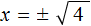
Затем найти арифметическое значение квадратного корня 
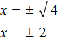
Выражение x = ± 2 означает, что x = 2 и x = −2. То есть корнями уравнения x2 − 4 = 0 являются числа 2 и −2. Запишем полностью решение данного уравнения:
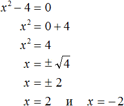
Выполним проверку. Подставим корни 2 и −2 в исходное уравнение и выполним соответствующие вычисления. Если при значениях 2 и −2 левая часть равна нулю, то это будет означать, что уравнение решено верно:
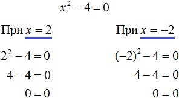
В обоих случаях левая часть равна нулю. Значит уравнение решено верно.
Решим ещё одно уравнение. Пусть требуется решить квадратное уравнение (x + 2)2 = 25
Для начала проанализируем данное уравнение. Левая часть возведенá в квадрат и она равна 25. Какое число в квадрате равно 25? Очевидно, что числа 5 и −5
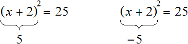
То есть наша задача найти x, при которых выражение x + 2 будет равно числам 5 и −5. Запишем эти два уравнения:
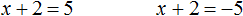
Решим оба уравнения. Это обычные линейные уравнения, которые решаются легко:
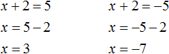
Значит корнями уравнения (x + 2)2 = 25 являются числа 3 и −7.
В данном примере как и в прошлом можно использовать определение квадратного корня. Так, в уравнения (x + 2)2 = 25 выражение (x + 2) представляет собой квадратный корень из числа 25. Поэтому можно cначала записать, что
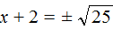
.Тогда правая часть станет равна ±5. Полýчится два уравнения: x + 2 = 5 и x + 2 = −5. Решив по отдельности каждое из этих уравнений мы придём к корням 3 и −7.
Запишем полностью решение уравнения (x + 2)2 = 25
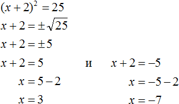
Из рассмотренных примеров видно, что квадратное уравнение имеет два корня. Чтобы не забыть о найденных корнях, переменную x можно подписывать нижними индексами. Так, корень 3 можно обозначить через x1, а корень −7 через x2
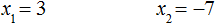
В предыдущем примере тоже можно было сделать так. Уравнение x2 − 4 = 0 имело корни 2 и −2. Эти корни можно было обозначить как x1 = 2 и x2 = −2.
Бывает и так, что квадратное уравнение имеет только один корень или вовсе не имеет корней. Такие уравнения мы рассмотрим позже.
Сделаем проверку для уравнения (x + 2)2 = 25. Подставим в него корни 3 и −7. Если при значениях 3 и −7 левая часть равна 25, то это будет означать, что уравнение решено верно:
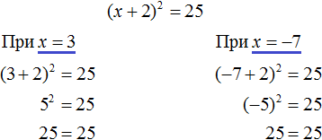
В обоих случаях левая часть равна 25. Значит уравнение решено верно.
Квадратное уравнение бывает дано в разном виде. Наиболее его распространенная форма выглядит так:
ax2 + bx + c = 0,
где a, b, c — некоторые числа, x — неизвестное.
Это так называемый общий вид квадратного уравнения. В таком уравнении все члены собраны в общем месте (в одной части), а другая часть равна нулю. По другому такой вид уравнения называют нормальным видом квадратного уравнения.
Пусть дано уравнение 3x2 + 2x = 16. В нём переменная x возведенá во вторую степень, значит уравнение является квадратным. Приведём данное уравнение к общему виду.
Итак, нам нужно получить уравнение, которое будет похоже на уравнение ax2 + bx + c = 0. Для этого в уравнении 3x2 + 2x = 16 перенесем 16 из правой части в левую часть, изменив знак:
3x2 + 2x − 16 = 0
Получили уравнение 3x2 + 2x − 16 = 0. В этом уравнении a = 3, b = 2, c = −16.
В квадратном уравнении вида ax2 + bx + c = 0 числа a, b и c имеют собственные названия. Так, число a называют первым или старшим коэффициентом; число b называют вторым коэффициентом; число c называют свободным членом.
В нашем случае для уравнения 3x2 + 2x − 16 = 0 первым или старшим коэффициентом является 3; вторым коэффициентом является число 2; свободным членом является число −16. Есть ещё другое общее название для чисел a, b и c — параметры.
Так, в уравнении 3x2 + 2x − 16 = 0 параметрами являются числа 3, 2 и −16.
В квадратном уравнении желательно упорядочивать члены так, чтобы они располагались в таком же порядке как у нормального вида квадратного уравнения.
Например, если дано уравнение −5 + 4x2 + x = 0, то его желательно записать в нормальном виде, то есть в виде ax2+ bx + c = 0.
В уравнении −5 + 4x2 + x = 0 видно, что свободным членом является −5, он должен располагаться в конце левой части. Член 4x2 содержит старший коэффициент, он должен располагаться первым. Член x соответственно будет располагаться вторым:
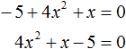
Квадратное уравнение в зависимости от случая может принимать различный вид. Всё зависит от того, чему равны значения a, b и с.
Если коэффициенты a, b и c не равны нулю, то квадратное уравнение называют полным. Например, полным является квадратное уравнение 2x2 + 6x − 8 = 0.
Если какой-то из коэффициентов равен нулю (то есть отсутствует), то уравнение значительно уменьшается и принимает более простой вид. Такое квадратное уравнение называют неполным. Например, неполным является квадратное уравнение 2x2 + 6x = 0, в нём имеются коэффициенты a и b (числа 2 и 6), но отсутствует свободный член c.
Рассмотрим каждый из этих видов уравнений, и для каждого из этих видов определим свой способ решения.
Пусть дано квадратное уравнение 2x2 + 6x − 8 = 0. В этом уравнении a = 2, b = 6, c = −8. Если b сделать равным нулю, то уравнение примет вид:
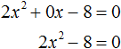
Получилось уравнение 2x2 − 8 = 0. Чтобы его решить перенесем −8 в правую часть, изменив знак:
2x2 = 8
Для дальнейшего упрощения уравнения воспользуемся ранее изученными тождественными преобразованиями. В данном случае можно разделить обе части на 2
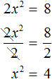
У нас получилось уравнение, которое мы решали в начале данного урока. Чтобы решить уравнение x2 = 4, следует воспользоваться определением квадратного корня. Если x2 = 4, то
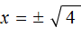
. Отсюда x = 2 и x = −2.Значит корнями уравнения 2x2 − 8 = 0 являются числа 2 и −2. Запишем полностью решение данного уравнения:
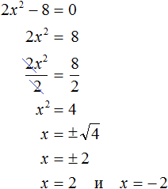
Выполним проверку. Подставим корни 2 и −2 в исходное уравнение и выполним соответствующие вычисления. Если при значениях 2 и −2 левая часть равна нулю, то это будет означать, что уравнение решено верно:
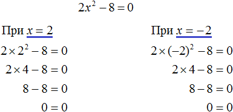
В обоих случаях левая часть равна нулю, значит уравнение решено верно.
Уравнение, которое мы сейчас решили, является неполным квадратным уравнением. Название говорит само за себя. Если полное квадратное уравнение выглядит как ax2 + bx + c = 0, то сделав коэффициент b нулём получится неполное квадратное уравнение ax2 + c = 0.
У нас тоже сначала было полное квадратное уравнение 2x2 + 6x − 4 = 0. Но мы сделали коэффициент b нулем, то есть вместо числа 6 поставили 0. В результате уравнение обратилось в неполное квадратное уравнение 2x2 − 4 = 0.
В начале данного урока мы решили квадратное уравнение x2 − 4 = 0. Оно тоже является уравнением вида ax2 + c = 0, то есть неполным. В нем a = 1, b = 0, с = −4.
Также, неполным будет квадратное уравнение, если коэффициент c равен нулю.
Рассмотрим полное квадратное уравнение 2x2 + 6x − 4 = 0. Сделаем коэффициент c нулём. То есть вместо числа 4 поставим 0
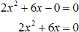
Получили квадратное уравнение 2x2 + 6x=0, которое является неполным. Чтобы решить такое уравнение, переменную x выносят за скобки:
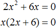
Получилось уравнение x(2x + 6) = 0 в котором нужно найти x, при котором левая часть станет равна нулю. Заметим, что в этом уравнении выражения x и (2x + 6) являются сомножителями. Одно из свойств умножения говорит, что произведение равно нулю, если хотя бы один из сомножителей равен нулю (или первый сомножитель или второй).
В нашем случае равенство будет достигаться, если x будет равно нулю или (2x + 6) будет равно нулю. Так и запишем для начала:
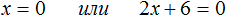
Получилось два уравнения: x = 0 и 2x + 6 = 0. Первое уравнение решать не нужно — оно уже решено. То есть первый корень равен нулю.
Чтобы найти второй корень, решим уравнение 2x + 6 = 0. Это обычное линейное уравнение, которое решается легко:
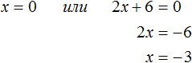
Видим, что второй корень равен −3.
Значит корнями уравнения 2x2 + 6x = 0 являются числа 0 и −3. Запишем полностью решение данного уравнения:
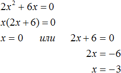
Выполним проверку. Подставим корни 0 и −3 в исходное уравнение и выполним соответствующие вычисления. Если при значениях 0 и −3 левая часть равна нулю, то это будет означать, что уравнение решено верно:
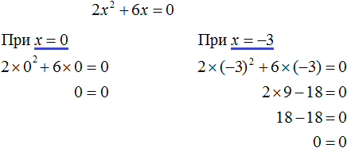
Следующий случай это когда числа b и с равны нулю. Рассмотрим полное квадратное уравнение 2x2 + 6x − 4 = 0. Сделаем коэффициенты b и c нулями. Тогда уравнение примет вид:
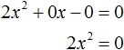
Получили уравнение 2x2 = 0. Левая часть является произведением, а правая часть равна нулю. Произведение равно нулю, если хотя бы один из сомножителей равен нулю. Очевидно, что x = 0. Действительно, 2 × 02 = 0. Отсюда, 0 = 0. При других значениях x равенства достигаться не будет.
Проще говоря, если в квадратном уравнении вида ax2 + bx + c = 0 числа b и с равны нулю, то корень такого уравнения равен нулю.
Отметим, что когда употребляются словосочетания «b равно нулю» или «с равно нулю«, то подразумевается, что параметры b или c вовсе отсутствуют в уравнении.
Например, если дано уравнение 2x2 − 32 = 0, то мы говорим, что b = 0. Потому что если сравнить с полным уравнением ax2 + bx + c = 0, то можно заметить, что в уравнении 2x2 − 32 = 0 присутствует старший коэффициент a, равный 2; присутствует свободный член −32; но отсутствует коэффициент b.
Наконец, рассмотрим полное квадратное уравнение ax2 + bx + c = 0. В качестве примера решим квадратное уравнение x2 − 2x + 1 = 0.
Итак, требуется найти x, при котором левая часть станет равна нулю. Воспользуемся изученными ранее тождественными преобразованиями.
Прежде всего заметим, что левая часть уравнения представляет собой квадрат разности двух выражений. Если мы вспомним как раскладывать многочлен на множители, то получим в левой части (x − 1)2.
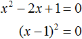
Рассуждаем дальше. Левая часть возведенá в квадрат и она равна нулю. Какое число в квадрате равно нулю? Очевидно, что только 0. Поэтому наша задача найти x, при котором выражение x − 1 равно нулю. Решив простейшее уравнение x − 1 = 0, можно узнать чему равно x
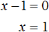
Этот же результат можно получить, если воспользоваться квадратным корнем. В уравнении (x − 1)2 = 0 выражение (x − 1) представляет собой квадратный корень из нуля. Тогда можно записать, что
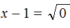
. В этом примере записывать перед корнем знак ± не нужно, поскольку корень из нуля имеет только одно значение — ноль. Тогда получается x − 1 = 0. Отсюда x = 1.Значит корнем уравнения x2 − 2x + 1 = 0 является единица. Других корней у данного уравнения нет. В данном случае мы решили квадратное уравнение, имеющее только один корень. Такое тоже бывает.
Не всегда бывают даны простые уравнения. Рассмотрим например уравнение x2 + 2x − 3 = 0.
В данном случае левая часть уже не является квадратом суммы или разности. Поэтому нужно искать другие пути решения.
Заметим, что левая часть уравнения представляет собой квадратный трехчлен. Тогда можно попробовать выделить полный квадрат из этого трёхчлена и посмотреть что это нам даст.
Выделим полный квадрат из квадратного трёхчлена, располагающего в левой части уравнения:
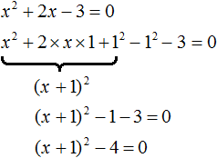
В получившемся уравнении перенесем −4 в правую часть, изменив знак:
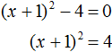
Теперь воспользуемся квадратным корнем. В уравнении (x + 1)2 = 4 выражение (x + 1) представляет собой квадратный корень из числа 4. Тогда можно записать, что
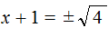
. Вычисление правой части даст выражение x + 1 = ±2. Отсюда полýчится два уравнения: x + 1 = 2 и x + 1 = −2, корнями которых являются числа 1 и −3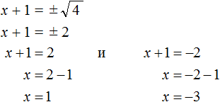
Значит корнями уравнения x2 + 2x − 3 = 0 являются числа 1 и −3.
Выполним проверку:
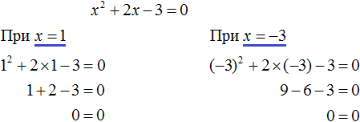
Пример 3. Решить уравнение x2 − 6x + 9 = 0, выделив полный квадрат.
Выделим полный квадрат из левой части:
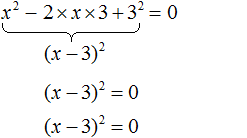
Далее воспользуемся квадратным корнем и узнáем чему равно x
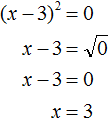
Значит корнем уравнения x2 − 6x + 9 = 0 является 3. Выполним проверку:
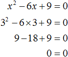
Пример 4. Решить квадратное уравнение 4x2 + 28x − 72 = 0, выделив полный квадрат:
Выделим полный квадрат из левой части:
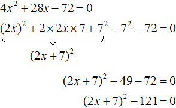
Перенесём −121 из левой части в правую часть, изменив знак:
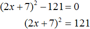
Воспользуемся квадратным корнем:
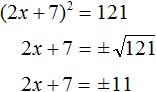
Получили два простых уравнения: 2x + 7 = 11 и 2x + 7 = −11. Решим их:
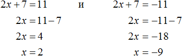
Пример 5. Решить уравнение 2x2 + 3x − 27 = 0
Это уравнение немного посложнее. Когда мы выделяем полный квадрат, первый член квадратного трёхчлена мы представляем в виде квадрата какого-нибудь выражения.
Так, в прошлом примере первым членом уравнения был 4x2. Его можно было представить в виде квадрата выражения 2x, то есть (2x)2 = 22x2 = 4x2. Чтобы убедиться что это правильно, можно извлечь квадратный корень из выражения 4x2. Это квадратный корень из произведения — он равен произведению корней:
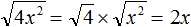
В уравнении 2x2 + 3x − 27 = 0 первый член это 2x2. Его нельзя представить в виде квадрата какого-нибудь выражения. Потому что нет числá, квадрат которого равен 2. Если бы такое число было, то этим числом был бы квадратный корень из числа 2. Но квадратный корень из числа 2 извлекается только приближённо. А приближённое значение не годится для представления числá 2 в виде квадрата.
Если обе части исходного уравнения умножить или разделить на одно и то же число, то полýчится уравнение равносильное исходному. Это правило сохраняется и для квадратного уравнения.
Тогда можно разделить обе части нашего уравнения на 2. Это позвóлит избавиться от двойки перед x2 что впоследствии даст нам возможность выделить полный квадрат:
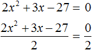
Перепишем левую часть в виде трёх дробей со знаменателем 2
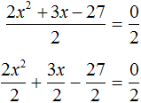
Сократим первую дробь на 2. Остальные члены левой части перепишем без изменений. Правая часть по-прежнему станет равна нулю:
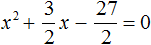
Выделим полный квадрат.
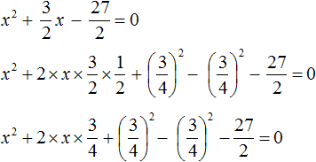
При представлении члена
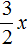
в виде удвоенного произведения, появление множителя 2 привело бы к тому, что этот множитель и знаменатель дроби \(\frac{3}{2}\) сократились бы. Чтобы этого не произошло, удвоенное произведение было домножено на \(\frac{1}{2}\). При выделении полного квадрата всегда нужно стараться сделать так, чтобы значение изначального выражения не изменилось.Свернём полученный полный квадрат:
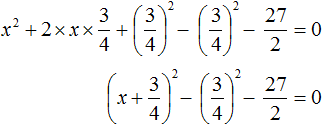
Приведём подобные члены:
Перенесём дробь в правую часть, изменив знак:
Воспользуемся квадратным корнем. Выражение представляет собой квадратный корень из числа
Для вычисления правой части воспользуемся правилом извлечения квадратного корня из дроби:

Тогда наше уравнение примет вид:
Полýчим два уравнения:
Решим их:
Значит корнями уравнения 2x2 + 3x − 27 = 0 являются числа 3 и .
Корень удобнее оставить в таком виде, не выполняя деления числителя на знаменатель. Так проще будет выполнять проверку.
Выполним проверку. Подставим найденные корни в исходное уравнение:
В обоих случаях левая часть равна нулю, значит уравнение 2x2 + 3x − 27 = 0 решено верно.
Решая уравнение 2x2 + 3x − 27 = 0, в самом начале мы разделили обе его части на 2. В результате получили квадратное уравнение, в котором коэффициент перед x2 равен единице:
Такой вид квадратного уравнения называют приведённым квадратным уравнением.
Любое квадратное уравнение вида ax2 + bx + c = 0 можно сделать приведённым. Для этого нужно разделить обе его части на коэффициент, который располагается перед x². В данном случае обе части уравнения ax2 + bx + c = 0 нужно разделить на a

Пример 6. Решить квадратное уравнение 2x2 + x + 2 = 0
Сделаем данное уравнение приведённым:
Выделим полный квадрат:
Получили уравнение , в котором квадрат выражения равен отрицательному числу . Такого быть не может, поскольку квадрат любого числа или выражения всегда положителен.
Следовательно, нет такого значения x, при котором левая часть стала бы равна . Значит уравнение не имеет корней.
А поскольку уравнение равносильно исходному уравнению 2x2 + x + 2 = 0, то и оно (исходное уравнение) не имеет корней.
Формулы корней квадратного уравнения
Выделять полный квадрат для каждого решаемого квадратного уравнения не очень удобно.
Можно ли создать универсальные формулы для решения квадратных уравнений? Оказывается можно. Сейчас мы этим и займёмся.
Взяв за основу буквенное уравнение ax2 + bx + c = 0, и выполнив некоторые тождественные преобразования, мы сможем получить формулы для вывода корней квадратного уравнения ax2 + bx + c = 0. В эти формулы можно будет подставлять коэффициенты a, b, с и получать готовые решения.
Итак, выделим полный квадрат из левой части уравнения ax2 + bx + c = 0. Сначала сделаем данное уравнение приведённым. Разделим обе его части на a
Теперь в получившемся уравнении выделим полный квадрат:
Перенесем члены и в правую часть, изменив знак:
Приведём правую часть к общему знаменателю. Дроби, состоящие из букв, привóдят к общему знаменателю методом «крест-нáкрест». То есть знаменатель первой дроби станóвится дополнительным множителем второй дроби, а знаменатель второй дроби станóвится дополнительным множителем первой дроби:
В числителе правой части вынесем за скобки a
Сократим правую часть на a
Поскольку все преобразования были тождественными, то получившееся уравнение имеет те же корни, что и исходное уравнение ax2 + bx + c = 0.
Уравнение будет иметь корни только тогда, если правая часть больше нуля или равна нулю. Это потому что в левой части выполнено возведéние в квадрат, а квадрат любого числа положителен или равен нулю (если в этот квадрат возвóдится ноль). А чему будет равна правая часть зависит от того, что будет подставлено вместо переменных a, b и c.
Поскольку при любом a не рáвным нулю, знаменатель правой части уравнения всегда будет положительным, то знак дроби будет зависеть от знака её числителя, то есть от выражения b2 − 4ac.
Выражение b2 − 4ac называют дискриминантом квадратного уравнения. Дискриминант это латинское слово, означающее различитель. Дискриминант квадратного уравнения обозначается через букву D
D = b2 − 4ac
Дискриминант позволяет заранее узнать имеет ли уравнение корни или нет. Так, в предыдущем задании мы долго решали уравнение 2x2 + x + 2 = 0 и оказалось, что оно не имеет корней. Дискриминант же позволил бы нам заранее узнать, что корней нет. В уравнении 2x2 + x + 2 = 0 коэффициенты a, b и c равны 2, 1 и 2 соответственно. Подставим их в формулу D = b2−4ac
D = b2 − 4ac = 12 − 4 × 2 × 2 = 1 − 16 = −15.
Видим, что D (оно же b2 − 4ac) является отрицательным числом. Тогда нет смысла решать уравнение 2x2 + x + 2 = 0, выделяя в нём полный квадрат, потому что когда мы дойдем до уравнения вида , окажется что правая часть станет меньше нуля (из-за отрицательного дискриминанта). А квадрат числа не может быть отрицательным. Следовательно, корней у данного уравнения не будет.
Станóвится понятно почему древние люди считали выражение b2 − 4ac различителем. Это выражение подобно индикатору позволяет различить уравнение имеющего корни от уравнения, не имеющего корней.
Итак, D равно b2 − 4ac. Подставим в уравнении вместо выражения b2 − 4ac букву D
Если дискриминант исходного уравнения окажется меньше нуля (D < 0), то уравнение примет вид:
В этом случае говорят, что у исходного уравнения корней нет, поскольку квадрат любого числа не должен быть отрицательным.
Если дискриминант исходного уравнения окажется больше нуля (D > 0), то уравнение примет вид:
В этом случае уравнение будет иметь два корня. Для их вывода воспользуемся квадратным корнем:
Получили уравнение . Из него полýчится два уравнения: и . Выразим x в каждом из уравнений:
Получившиеся два равенства это и есть универсальные формулы для решения квадратного уравнения ax2 + bx + c = 0. Их называют формулами корней квадратного уравнения.
Чаще всего эти формулы обозначаются как x1 и x2. То есть для вычисления первого корня используется формула c индексом 1; для вывода второго корня — формула с индексом 2. Обозначим свои формулы так же:

Очерёдность применения формул не важнá.
Решим например квадратное уравнение x2 + 2x − 8 = 0 с помощью формул корней квадратного уравнения. Коэффициенты данного квадратного уравнения это числа 1, 2 и −8. То есть, a = 1, b = 2, c = −8.
Прежде чем использовать формулы корней квадратного уравнения, нужно найти дискриминант этого уравнения.
Найдём дискриминант квадратного уравнения. Для этого воспользуемся формулой D = b2 − 4ac. Вместо переменных a, b и c у нас будут коэффициенты уравнения x2 + 2x − 8 = 0
D = b2 − 4ac = 22− 4 × 1 × (−8) = 4 + 32 = 36
Дискриминант больше нуля. Значит уравнение имеет два корня. Теперь можно воспользоваться формулами корней квадратного уравнения:
Значит корнями уравнения x2 + 2x − 8 = 0 являются числа 2 и −4. Проверкой убеждаемся, что корни найдены верно:
Наконец, рассмотрим случай когда дискриминант квадратного уравнения равен нулю. Вернёмся к уравнению . Если дискриминант равен нулю, то правая часть уравнения примет вид:
И в этом случае квадратное уравнение будет иметь только один корень. Воспользуемся квадратным корнем:
Далее выражаем x

Это ещё одна формула для вывода корня квадратного корня. Рассмотрим её применение. Ранее мы решили уравнение x2 − 6x + 9 = 0, имеющее один корень 3. Решили мы его методом выделения полного квадрата. Теперь попробуем решить с помощью формул.
Найдём дискриминант квадратного уравнения. В этом уравнении a = 1, b = −6, c = 9. Тогда по формуле дискриминанта имеем:
D = b2 − 4ac = (−6)2 − 4 × 1 × 9 = 36 − 36 = 0
Дискриминант равен нулю (D = 0). Это означает, что уравнение имеет только один корень, и вычисляется он по формуле 

Значит корнем уравнения x2 − 6x + 9 = 0 является число 3.
Для квадратного уравнения, имеющего один корень также применимы формулы  и
и  . Но применение каждой из них будет давать один и тот же результат.
. Но применение каждой из них будет давать один и тот же результат.
Применим эти две формулы для предыдущего уравнения. В обоих случаях получим один и тот же ответ 3

Если квадратное уравнение имеет только один корень, то желательно применять формулу  , а не формулы и . Это позволяет сэкономить время и место.
, а не формулы и . Это позволяет сэкономить время и место.
Пример 3. Решить уравнение 5x2 − 6x + 1 = 0
Найдём дискриминант квадратного уравнения:
Дискриминант больше нуля. Значит уравнение имеет два корня. Воспользуемся формулами корней квадратного уравнения:
Значит корнями уравнения 5x2 − 6x + 1 = 0 являются числа 1 и \(\frac{1}{5}\).
Ответ: 1; \(\frac{1}{5}\).
Пример 4. Решить уравнение x2 + 4x + 4 = 0
Найдём дискриминант квадратного уравнения:
Дискриминант равен нулю. Значит уравнение имеет только один корень. Он вычисляется по формуле 
Значит корнем уравнения x2 + 4x + 4 = 0 является число −2.
Ответ: −2.
Пример 5. Решить уравнение 3x2 + 2x + 4 = 0
Найдём дискриминант квадратного уравнения:
Дискриминант меньше нуля. Значит корней у данного уравнения нет.
Ответ: корней нет.
Пример 6. Решить уравнение (x + 4)2 = 3x + 40
Приведём данное уравнение к нормальному виду. В левой части располагается квадрата суммы двух выражений. Раскрóем его:
Перенесём все члены из правой части в левую часть, изменив их знаки. В правой части останется ноль:
Приведём подобные члены в левой части:
В получившемся уравнении найдём дискриминант:
Дискриминант больше нуля. Значит уравнение имеет два корня. Воспользуемся формулами корней квадратного уравнения:
Значит корнями уравнения (x + 4)2 = 3x + 40 являются числа 3 и −8.
Ответ: 3; −8.
Пример 7. Решить уравнение
Умнóжим обе части данного уравнения на 2. Это позвóлит нам избавиться от дроби в левой части:
В получившемся уравнении перенесём 22 из правой части в левую часть, изменив знак. В правой части останется 0
Приведём подобные члены в левой части:
В получившемся уравнении найдём дискриминант:
Дискриминант больше нуля. Значит уравнение имеет два корня. Воспользуемся формулами корней квадратного уравнения:
Значит корнями уравнения являются числа 23 и −1.
Ответ: 23; −1.
Пример 8. Решить уравнение
Умнóжим обе части на наименьшее общее кратное знаменателей обеих дробей. Это позвóлит избавиться от дробей в обеих частях. Наименьшее общее кратное чисел 2 и 3 это число 6. Тогда получим:
В получившемся уравнении раскроем скобки в обеих частях:
Теперь перенесём все члены из правой части в левую часть, изменив у них знаки. В правой части останется 0
Приведём подобные члены в левой части:
В получившемся уравнении найдём дискриминант:
Дискриминант больше нуля. Значит уравнение имеет два корня. Воспользуемся формулами корней квадратного уравнения:
Значит корнями уравнения являются числа  и 2.
и 2.
Примеры решения квадратных уравнений
Пример 1. Решить уравнение x2 = 81
Это простейшее квадратное уравнение, в котором надо определить число, квадрат которого равен 81. Таковыми являются числа 9 и −9. Воспользуемся квадратным корнем для их вывода:
Ответ: 9, −9.
Пример 2. Решить уравнение x2 − 9 = 0
Это неполное квадратное уравнение. Для его решения нужно перенести член −9 в правую часть, изменив знак. Тогда получим:
Ответ: 3, −3.
Пример 3. Решить уравнение x2 − 9x = 0
Это неполное квадратное уравнение. Для его решения сначала нужно вынести x за скобки:
Левая часть уравнения является произведением. Произведение равно нулю, если хотя один из сомножителей равен нулю.
Левая часть станет равна нулю, если отдельно x равно нулю, или если выражение x − 9 равно нулю. Получится два уравнения, одно из которых уже решено:
Ответ: 0, 9.
Пример 4. Решить уравнение x2 + 4x − 5 = 0
Это полное квадратное уравнение. Его можно решить методом выделения полного квадрата или с помощью формул корней квадратного уравнения.
Решим данное уравнение с помощью формул. Сначала найдём дискриминант:
D = b2 − 4ac = 42 − 4 × 1 × (−5) = 16 + 20 = 36
Дискриминант больше нуля. Значит уравнение имеет два корня. Вычислим их:
Ответ: 1, −5.
Пример 5. Решить уравнение
Умнóжим обе части на наименьшее общее кратное чисел 5, 3 и 6. Это позвóлит избавиться от дробей в обеих частях:
В получившемся уравнении перенесём все члены из правой части в левую часть, изменив знак. В правой части останется ноль:
Приведём подобные члены:
Решим получившееся уравнение с помощью формул:
Ответ: 5, \(-\frac{5}{6}\).
Пример 6. Решить уравнение x2 = 6
В данном примере как и в первом нужно воспользоваться квадратным корнем:
Однако, квадратный корень из числа 6 не извлекается. Он извлекается только приближённо. Корень можно извлечь с определённой точностью. Извлечём его с точностью до сотых:
Но чаще всего корень оставляют в виде радикала:
Ответ:
Пример 7. Решить уравнение (2x + 3)2 + (x − 2)2 = 13
Раскроем скобки в левой части уравнения:
В получившемся уравнении перенесём 13 из правой части в левую часть, изменив знак. Затем приведём подобные члены:
Получили неполное квадратное уравнение. Решим его:
Ответ: 0, −1,6.
Пример 8. Решить уравнение (5 + 7x)(4 − 3x) = 0
Данное уравнение можно решить двумя способами. Рассмотрим каждый из них.
Первый способ. Раскрыть скобки и получить нормальный вид квадратного уравнения.
Раскроем скобки:
Приведём подобные члены:
Перепишем получившееся уравнение так, чтобы член со старшим коэффициентом располагался первым, член со вторым коэффициентом — вторым, а свободный член располагался третьим:
Чтобы старший член стал положительным, умнóжим обе части уравнения на −1. Тогда все члены уравнения поменяют свои знаки на противоположные:
Решим получившееся уравнение с помощью формул корней квадратного уравнения:
Второй способ. Найти значения x, при которых сомножители левой части уравнения равны нулю. Этот способ удобнее и намного короче.
Произведение равно нулю, если хотя бы один из сомножителей равен нулю. В данном случае равенство в уравнении (5 + 7x)(4 − 3x) = 0 будет достигаться, если выражение (5 + 7x) равно нулю, или же выражение (4 − 3x) равно нулю. Наша задача выяснить при каких x это происходит:
Примеры решения задач
Предстáвим, что возникла необходимость построить небольшую комнату, площадь которой 8 м2. При этом длина комнаты должна быть в два раза больше её ширины. Как определить длину и ширину такой комнаты?
Сделаем примерный рисунок этой комнаты, который иллюстрирует вид сверху:
Обозначим ширину комнаты через x. А длину комнаты через 2x, потому что по условию задачи длина должна быть в два раза больше ширины. Множитель 2 и выполнит это требование:
Поверхность комнаты (её пол) является прямоугольником. Для вычисления площади прямоугольника, нужно длину данного прямоугольника умножить на его ширину. Сделаем это:
\[2x \times x\]
По условию задачи площадь должна быть 8 м2. Значит выражение 2x × x следует приравнять к 8
\[2x \times x = 8\]
Получилось уравнение. Если решить его, то можно найти длину и ширину комнаты.
Первое что можно сделать это выполнить умножение в левой части уравнения:
2x2 = 8
В результате этого преобразования переменная x перешла во вторую степень. А мы говорили, что если переменная, входящая в уравнение, возведенá во вторую степень (в квадрат), то такое уравнение является уравнением второй степени или квадратным уравнением.
Для решения нашего квадратного уравнения воспользуемся изученными ранее тождественными преобразованиями. В данном случае можно разделить обе части на 2
Теперь воспользуемся квадратным корнем. Если x2 = 4, то . Отсюда x = 2 и x = −2.
Через x была обозначена ширина комнаты. Ширина не должна быть отрицательной, поэтому в расчёт берём только значение 2. Такое часто бывает при решении задачи, в которых применяется квадратное уравнение. В ответе получаются два корня, но условию задачи удовлетворяет только один из них.
А длина была обозначена через 2x. Значение x теперь известно, подставим его в выражение 2x и вычислим длину:
\[2x = 2 \times 2 = 4\]
Значит длина равна 4 м, а ширина 2 м. Это решение удовлетворяет условию задачи, поскольку площадь комнаты равна 8 м2
4 × 2 = 8 м2
Ответ: длина комнаты составляет 4 м, а ширина 2 м.
Пример 2. Огородный участок, имеющий форму прямоугольника, одна сторона которого на 10 м больше другой, требуется обнести изгородью. Определить длину изгороди, если известно, что площадь участка равна 1200 м2
Решение
Длина прямоугольника, как правило, больше его ширины. Пусть ширина участка x метров, а длина (x + 10) метров. Площадь участка составляет 1200 м2. Умножим длину участка на его ширину и приравняем к 1200, получим уравнение:
\[x(x + 10) = 1200\]
Решим данное уравнение. Для начала раскроем скобки в левой части:
Перенесём 1200 из правой части в левую часть, изменив знак. В правой части останется 0
Решим получившееся уравнение с помощью формул:
Несмотря на то, что квадратное уравнение имеет два корня, в расчёт берём только значение 30. Потому что ширина не может выражаться отрицательным числом.
Итак, через x была обозначена ширина участка. Она равна тридцати метрам. А длина была обозначена через выражение x + 10. Подставим в него найденное значение x и вычислим длину:
x + 10 = 30 + 10 = 40 м
Значит длина участка составляет сорок метров, а ширина тридцать метров. Эти значения удовлетворяют условию задачи, поскольку если перемножить длину и ширину (числа 40 и 30) получится 1200 м2
40 × 30 = 1200 м2
Теперь ответим на вопрос задачи. Какова длина изгороди? Чтобы её вычислить нужно найти периметр участка.
Периметр прямоугольника это сумма всех его сторон. Тогда:
P = 2(a + b) = 2 × (40 + 30) = 2 × 70 = 140 м.
Ответ: длина изгороди огородного участка составляет 140 м.
Задания для самостоятельного решения
Показать решение
Показать решение
Показать решение
Показать решение
Показать решение
Показать решение
Показать решение
Показать решение
Показать решение
Показать решение
Показать решение
Показать решение
Показать решение
Показать решение
Показать решение
Показать решение
Показать решение
Показать решение
Понравился урок?
Вступай в нашу новую группу Вконтакте и начни получать уведомления о новых уроках
Возникло желание поддержать проект?
Используй кнопку ниже